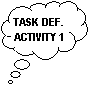

The Zeus Agent Building Toolkit |
The Application Realisation Guide |
| Contents | Introduction | Ontologies | Building Task Agents |
Utility Agents | Task Agent Configuration |
Agent Implementation |
During the agent creation stage the generic ZEUS agent is configured to fulfil its application-specific responsibilities. Thus by the time this stage is attempted the following design decisions should have already been taken:
What is the granularity of time for the application?
What agents exist?
What activities will each agent perform?
How will each agent interact with other agents?
What strategies and expertise does each agent know?
Guidance for these agent design decisions is provided in the Role Modelling guide and its case studies. This is intended to help the developer decide which agent aspects need to be reconfigured, according to the type of agent being created.
Choosing the Application Time-Grain
But before agents are defined the developer must decide on the application's granularity of time. The granularity refers to the smallest possible indivisible period of time for the application: a period known the time-grain. The time-grain determines the period between ‘ticks’ of the application-wide clock that is maintained by the Agent Name Servers. This global clock acts like Greenwich Mean Time (GMT), providing a standard time reference for all agents that is independent of any one agent’s own local time. It thus provides a means of synchronising agents regardless of their physical distribution.
In ZEUS the duration of all agent activities is expressed in time-grains rather than seconds or minutes, making the choice of time-grain length a significant decision. The key factor is how rapidly the agents’ environment changes. This is because new activities are started at the beginning of a time-grain, meaning there will be a delay between an event occurring and the agent reacting.
So, for instance, if the time-grain is 1 minute in length, and an event is detected 5 seconds after the time-grain begins, the agent will not react for at least another 55 seconds. There is another implication, if an agent can perform one activity per time-grain, and this activity takes on average 1 second to complete, it will be idle for 59 seconds in every minute.
From this discussion one might think that long time-grains are best avoided. However, because the time-grain is used for synchronisation there are dangers in choosing too small a duration. For instance, imagine that the time-grain is set to 1 second, this will only give each agent 1 second to observe its environment, make decisions and potentially perform actions. This may pose no problems for an agent on a fast machine that has no communication latency, but such performance is difficult to guarantee. The consequences of agents slipping out of synchronisation can be quite serious. Agents may begin to unexpectedly miss deadlines and the application may cease working or behave unpredictably, (and the cause may prove very difficult to undercover).
The choice of time-grain is thus dependent on factors like the nature of the application, the reliability of the network and the speed of the host machines that support the agents. For instance, a value of 30 seconds may be too slow for an application like network management, which tends to involve a very dynamic environment, or where agents need to continually interact with human users. Likewise if agents were monitoring changes to a relatively static subject, like a web site, a longer time-grain would probably be more efficient.
The default value for ZEUS applications is 30 seconds, which in our experience is long enough to allow several agents to run on the same machine and still respond comfortably.
For instructions on how to change the time-grain for your application see the section on Utility Agent Configuration.
The agent creation options are accessible through the 'Agent Options' panel of the ZEUS Agent Generator tool, which is illustrated in Figure 3.1.
| Figure 3.1: A screenshot of the Agent Options Panel of the Generator tool. The Known Agent Table lists all the agents that have been defined in the current project. |
 The Agent Generator tool does not treat agents as classes in the conventional object
oriented sense, where each class name refers to a template that can create as
many instances as needed at run-time. Instead, each agent instance refers to
an individual entity, and must be given its own unique name when it is created.
This is important to enable social relationships to be defined in terms of individuals,
rather than classes of agents.
The Agent Generator tool does not treat agents as classes in the conventional object
oriented sense, where each class name refers to a template that can create as
many instances as needed at run-time. Instead, each agent instance refers to
an individual entity, and must be given its own unique name when it is created.
This is important to enable social relationships to be defined in terms of individuals,
rather than classes of agents.
To create a new agent, select the New button from the Agent Options toolbar. This will create a new entry in the agent table using a temporary name.
Give the agent a more informative name by selecting its entry in the table and clicking on the Rename Agent button. The agent's name field will be editable, type in the new name and then press <return>.
If more than one agent shares the same expertise, abilities and attributes the developer will have to create a separate entry for each. Rather than re-entering the same information, once an individual has been defined it can be cloned as a separate individual and given its own unique name.
This is achieved by selecting the agent to clone in the table and clicking on the Clone Agent button from the Agent Options toolbar. This creates a new entry in the table using a temporary name, which can be renamed to something more appropriate.
An agent entry can be deleted permanently from the project by selecting its entry and clicking on the Delete button from the Agent Options toolbar. If you are certain you want to delete this agent, click 'OK' when the confirmation requester appears.
 In the
current version of the Generator there is no option to save agent definitions
separately, only as part of a project.
In the
current version of the Generator there is no option to save agent definitions
separately, only as part of a project.
Saving the project is achieved by clicking on the Save button in the Project Options toolbar, or by choosing the Save Project menu option.
Once an agent has been created it can be configured to meet the requirements of its intended role.
 To edit an agent either double clicking on its name in the Agent Table, or selecting
its entry and click on the Edit button in the Agent Options toolbar.
To edit an agent either double clicking on its name in the Agent Table, or selecting
its entry and click on the Edit button in the Agent Options toolbar.
This opens a new window entitled 'Agent Editor' containing 3 separate tab-panes that each facilitate the entry of information related to the methodology stage of the same name.
The remainder of this section describes the different sub-stages of the Agent Creation process, and how the Agent Editor supports them.
This aspect of the methodology is performed through the 'Agent Definition' panel of the Agent Editor. The Agent Definition Stage consists of three main activities, these are:
Configuring Planning Parameters, see activity DEF-1
Task Identification, see activity DEF-2
Initial Agent Resources, see activity DEF-3
A useful metaphor at this stage is to view the agent as a manager in charge of a factory that comprises a number of production lines (of identical machines), each of which can perform a number of different tasks. The manager possesses some resources, and the production of an item may consume some of these resources, with the production process lasting for a finite time interval.
The role of the manager is to produce items at the request of customers, in such a manner that idle time is minimised and profit is maximised. To achieve this, the manager has to schedule customer requests on the basis of available resources, free machines and the cost and time of performing each task. Typical customer requests are of the form 'produce item u given v by time w at cost x'.
To aid the manager’s scheduling process a diary is maintained for its current commitments. However, different applications will plan ahead for different periods of time, and be able to handle a different number of current tasks. Hence the first activity involves setting the planning ability of the agent.
DEF-1: Configuring Planning Parameters |
This activity involves configuring the two parameters of the agent's internal Planner and Scheduler, these are:
Maximum Number of Simultaneous Tasks - enter into this field the number of tasks the agent can perform concurrently, it is akin to the number of independent production lines in our metaphorical factory. The default value is 1 i.e. the agent can only attempts one task at a time. Whether or not this value needs to be changed is totally dependent on the role the agent will fulfil.
Planner Length - enter into this field the number of time-grains that the agent will normally plan its activities, it is akin to the longest duration over which our metaphorical factory manager will books requests. The default value is 20, but the most appropriate value for any given agent will depend on the duration chosen for the time-grain, and the policy of the agent in question. For instance, if an agent can only plan ahead for a short period it may be unable to undertake long-term commitments, but may be more reactive to changing circumstances.
Note: unlike most other ZEUS agent attributes these parameters can not be changed at run-time.
See also…
DEF-2: Task Identification |
This activity involves naming (but not yet actually defining) the application-specific tasks that this agent is capable of performing. This process by which this information is entered is illustrated in Figure 3.2.
Figure 3.2: Screenshot of the Task Identification Panel, and how to use
it
 Clicking
on the toolbar’s New button provides the choice of entering either a new Primitive
task or new Summary task, or choosing a task that has already been entered.
Clicking
on the toolbar’s New button provides the choice of entering either a new Primitive
task or new Summary task, or choosing a task that has already been entered.
A new entry will then appear in the table using a temporary name. (You may also notice that the newly created fact will also appear in the Task Table in the Generator’s main window).
To rename the task to something more meaningful, double click on its name field, edit the name and then press <return>.
See also…
DEF-3: Initial Agent Resource Allocation |
This activity involves listing the resources that the agent will possess when it is initialised. This activity takes place through the 'Initial Resources' panel where the upper table lists the facts owned, and the lower table enables the facts' attributes to be edited, as shown in Figure 3.3.
| Figure 3.3: The Initial Agent Resources panel, and how to use it |
Naturally, before a resource can be allocated to an agent it must first have been defined as part of the application ontology, (this should have been done during the previous stage).
 To enter
a new initial resource click on the toolbar's New button, this opens a window
showing the fact hierarchy of the project ontology. Select the appropriate
fact, and then press the OK button.
To enter
a new initial resource click on the toolbar's New button, this opens a window
showing the fact hierarchy of the project ontology. Select the appropriate
fact, and then press the OK button.
A new entry will now appear in table, consisting of a Fact Type (which can not be changed), and an Instance field that can be double-clicked to enter a more appropriate name.
Note that the @ character prefix indicates the resource is an individual instance, (and not any instance, which would be prefixed by a ? character).
Because initial resources are individual instances it will probably be necessary to individualise their attributes. Achieve this by selecting the fact in question in the upper table and then double-clicking on the Value cells of the lower table to open a panel where a new value can be entered.
Press <return> to enter the value and update the table. If the entered value appears in red then it is either syntactically incorrect or of an incompatible type, and will need to be changed.
Note: Whenever attribute values are being edited and another attribute needs to be referenced, right-click and a window showing the ontology's fact/attribute hierarchy will appear - just select the appropriate attribute and click OK.
By the time this activity is attempted the developer should have specified the list of tasks that the agent is capable of performing (see Activity DEF-2). Likewise, as the preconditions and effects of tasks are domain ontology concepts, the ontology should be comprehensively defined by the time this stage is attempted. If not, the developer may need to revisit the ontology devising process, although by this point the developer may have more focus and thus be better able to identify the appropriate application concepts.
 The
tool for this stage is the Task Editor, which can be launched by double clicking
on the task name in the Generator's Task Table, or selecting its entry in the
and clicking the Edit button.
The
tool for this stage is the Task Editor, which can be launched by double clicking
on the task name in the Generator's Task Table, or selecting its entry in the
and clicking the Edit button.
This will launch either the Primitive Task Editor (described in activity TASK-1) or the Summary Task Editor (described in TASK-2), depending on the underlying type of task.
|  | TASK-1: Using the Primitive Task Editor |
In ZEUS, a primitive task is a representation of some atomic (non-divisible) agent activity. As can be seen in Figure 3.4 in the Primitive Task Editor (PTE) depicts each task as a resource flow, where facts flow into a task, whereupon they are transformed into new facts.
| Figure 3.4: A Screenshot of the Primitive Task Editor with the main activities of the Task Definition Stage shown |
Using the PTE, the following aspects of a primitive task can be configured:
Preconditions - the resources needed for execution of the task
Effects - the resources that will be produced upon execution of the task
Cost - an expression given the cost of executing the task
Duration - an expression giving the time taken to execute the task
Precondition Ordering - the sequence in which preconditions should be achieved
Constraints - applicability restrictions on executing the task
As some of these aspects are dependent on each other, their definition is best attempted in the order listed above.
How to Enter a Task Precondition
A precondition is a fact that will be used (and possibly consumed) by a task when it executes. Preconditions are listed in the top table in the 'Task Preconditions' panel, whilst their attributes are listed in the bottom table.
 To add
a new precondition click on the toolbar's New button, this will open a pop-up
window listing all the facts in the currently loaded ontology. Choose the appropriate
fact and then click the OK button, the selected fact will then appear in the
precondition table.
To add
a new precondition click on the toolbar's New button, this will open a pop-up
window listing all the facts in the currently loaded ontology. Choose the appropriate
fact and then click the OK button, the selected fact will then appear in the
precondition table.
The instance name provides a handle for fact instances, akin to a variable name in programming languages. This can be edited and changed to something more meaningful by double clicking on its name. All names will be prefixed by the ? character to indicate that they are variables (i.e. any instance of that fact), rather than a specific instance.
The Modifiers field describes how each precondition will be used. To set a modifier double click on this field, this will open a window listing the available options - click on the check-box beside the one that is appropriate.
The modifiers applicable to preconditions are described in table 3.1.
|
Modifier |
Explanation |
Examples of Use |
|
Not |
Task only performed if fact is not present in locally |
For inhibitory factors, e.g. a produced fact that will inhibit production until it is removed |
|
Is Read Only |
Fact is not consumed, i.e. it survives task execution, but during which time it is not allocated exclusively to the task |
For items of information, e.g. an employee record |
|
Must be in Local Database |
Fact must be in the agent's own local possession, prevents agent obtaining it from another agent |
For items that should not be bought in, e.g. drive to work if a car is present, but don't buy one |
|
Is Replaced after Use |
Fact will be allocated to the task for the duration of its execution, but will not be consumed |
For persistent entities capable of serving one task at a time, e.g. employees or vehicles |
Table 3.1: The Precondition Modifiers
By default none of these modifiers are selected, it is assumed that all preconditions are reserved for the task's exclusive use, whereupon they will be consumed. The other options in the pop-up window: 'Is a Variable' and 'Is a Side-Effect only' are ghosted out, this is because preconditions are always variables, and never side effects.
How to Enter a Task Effect
An effect is a fact that represents the result of a task execution. The effects are listed in the top table in the 'Task Effects' panel, whilst their attributes are listed in the bottom table.
 New
effects are added by clicking on the toolbar's New button, this opens a pop-up
window listing all the facts in the currently loaded ontology. Choose the appropriate
fact and then click the OK button, the selected fact will then appear in the
effects table.
New
effects are added by clicking on the toolbar's New button, this opens a pop-up
window listing all the facts in the currently loaded ontology. Choose the appropriate
fact and then click the OK button, the selected fact will then appear in the
effects table.
The name field provides a handle for particular groups of effects, akin to a variable name in programming languages. This can be edited and changed to something more meaningful by double clicking on its name. All names will be prefixed by the ? character to indicate that they are variables (i.e. any instance of that fact), rather than a specific instance.
The Modifiers field for effects has a single option: 'Is a Side-Effect Only', is this is selected this task will not be selected by the Planner/Scheduler seeking to achieve this effect. Double click on the Modifiers cell of an effect to change this setting.
The difference between an effect and a side-effect is subtle; for instance, "lying on the ground" could be the side-effect of hitting someone, but if the intention is to merely to instruct someone to lie on the ground, hitting them is a far from ideal way of achieving it. By default effects are not marked as side effects.
How to Enter the Task Cost
Each task can be given a numeric expression that approximates the cost of invoking it. The interpretation of this cost, and the units in which it is expressed are application specific.
The cost is should be typed into the 'Cost' field of the lower 'Task Cost and Time' panel, then press <return> to commit the changes.
To refer to another attribute in a previously entered precondition or effect, right-click to launch a window showing the ontology's fact/attribute hierarchy, then select the appropriate attribute and click OK, and it will appear inside the panel.
The default cost value is 0, (i.e. cost is not significant). This only needs to be changed if the Planner/Scheduler is to base its decisions on the cost of invoking tasks.
How to Enter the Task Duration
Each task can be given a numeric expression that approximates the length of time taken for it to execute. For consistency the duration should be interpreted in terms of time-grain units.
The duration is should be typed into the 'Time' field of the lower 'Task Cost and Time' panel, then press <return> to commit the changes.
To refer to another attribute in a previously entered precondition or effect, right-click to launch a window showing the ontology's fact/attribute hierarchy, then select the appropriate attribute and click OK, and it will appear inside the panel.
The default duration is 1 time-grain, this is also the minimum duration - even for tasks that are 'instantaneous'. Whether this value needs to be changed depends on the nature of the task concerned.
How to Constrain Task Attributes
The lower tables in the 'Task Preconditions' and 'Task Effects' panels enable the applicability of the task to be restricted. By default the value field of each attribute is empty, meaning that any variable of that type can be used to satisfy the task's precondition. If however a value is entered into one these fields, the task will only be executed if a fact with the appropriate attribute can be secured.
To enter an attribute constraint, select the fact concerned from the upper table and then double-click on the Value cell of the relevant attribute in the lower table.
This will open a panel where a new value can be entered, press <return> to enter the value and update the table. If the entered value appears in red then it is either syntactically incorrect or of an incompatible type, and will need to be changed.
To refer to another attribute in a previously entered precondition or effect, right-click to launch a window showing the ontology's fact/attribute hierarchy, then select the appropriate attribute and click OK, and it will appear inside the panel.
Attribute constraints can either be literal values, or expressions can be evaluated into a value - this value will be compared against the corresponding attribute value of candidate facts at run-time to determine whether the fact is suitable for use.
See also…
How to Order Preconditions
The precondition order of a task is a partial ordering of its preconditions, constraining the sequence in which they must be achieved. By default it is assumed that they can be considered in any order, however, sometimes certain resources should be considered before others.
This is useful in cases where the domain realisation of one precondition determines the acceptability of others. For example, in a planning a journey, there may be preconditions that a flight is booked and transportation to the airport arranged. Here we might want to state the flight should be booked first, since arranging transportation to the airport requires foreknowledge of the airport from which the flight departs.
To specify an ordering, move to the PTE's 'Constraints' pane, it will be entered through its upper pane, the one labelled 'Preconditions Ordering Constraints'.
 Click on the toolbar's New button, this opens an ordering window consisting of
two panels. Select the fact that should be secured first from the 'Before' column,
and then select the fact it precedes from the 'After' column, i.e.:
Click on the toolbar's New button, this opens an ordering window consisting of
two panels. Select the fact that should be secured first from the 'Before' column,
and then select the fact it precedes from the 'After' column, i.e.:
As each ordering consists of a (before, after) pair, repeat as necessary for each precondition whose ordering is significant.
How to Enter Task Constraints
The 'Task Applicability Constraints' table is intended to enable the entry of constraints that do not relate to any particular fact (see "How to Constrain Task Attributes"). For instance, such a constraint might be 'do not attempt this task if the agent is unable to connect to the Internet'.
 To enter
one of these constraints click on this panel's New button, this will create
a new entry in the constraints table.
To enter
one of these constraints click on this panel's New button, this will create
a new entry in the constraints table.
Then double click on the new entry to edit it, the constraint should be added in the form of an expression that will evaluate to true or false.
See also…
TASK-2: Using the Summary Task Editor |
In ZEUS, a summary task consists of a number of primitive subtasks that need to be performed in some order to achieve its effects. Thus summary tasks are effectively mini-plans, which are useful for representational and cognitive economy (and planning efficiency). Summary Tasks are entered through their own editor, which is shown in Figure 3.5.
| To appear |
| Figure 3.5: A Screenshot of the Summary Task Editor (STE) |
Summary tasks are described in terms of a number of nodes and effect-precondition (producer-consumer) links between the nodes. Just as with primitive tasks, each node is defined in terms of its preconditions and effects. However, each node is simply a placeholder that can be replaced by any primitive or summary task with matching preconditions and effects. Like primitive tasks, summary tasks also have associated duration, cost and constraints; however, they lack a reference to an execution function since they cannot be executed directly.
This will be documented in a future release.
By the time this activity is attempted the application's agents should already have been defined, along with the tasks they are capable of performing. This stage involves supplying this knowledge about agents and abilities to the agents themselves, using the 'Agent Organisation' pane of the Agent Editor.
By default, agents are ignorant of names and the abilities of their neighbours, so if an agent needs the service of another it will need to contact a directory service to discover it. However, agents may have prior knowledge of other agents, especially if they interact with them on a regular basis. These known agents are called 'acquaintances'. There are four different types of relationships that can exist between agents, if they are acquainted they can be superiors, subordinates or co-workers, otherwise they will be peers. These relationships are described in Table 3.2.
| Relationship | Explanation |
| Peer | The default relationship with no assumptions about agent interaction |
| Superior | The acquaintance is possesses higher authority than this agent, and can issue orders that this agent must obey |
| Subordinate | The acquaintance has less authority than this agent, and can be issued orders that it must obey |
| Co-worker | The acquaintance belongs to the same 'community' as this agent, and will be asked before peers when any resources are required |
Table 3.2: The Acquaintance Relationship Types
Entering acquaintances and their relationships is one of the two activities of this stage, namely:
Entering Known Acquaintances, (ORG-1)
Entering Known Abilities,(ORG-2)
ORG-1: Entering Known Acquaintances |
Acquaintances are specified through the 'Known Acquaintances' panel, as illustrated in Figure 3.6.
| Figure 3.6: The Known Acquaintances panel, showing how to enter an acquaintance |
 To enter a new acquaintance click on the toolbar's New button, this displays a list of
all created so far in the current project, (with the exception of the agent
being defined, of course).
To enter a new acquaintance click on the toolbar's New button, this displays a list of
all created so far in the current project, (with the exception of the agent
being defined, of course).
Select the agent that will be the acquaintance. (If the acquaintance has not been created yet select the 'Create New Acquaintance' option: this duplicates the function of the 'Add New Agent' button of the Agent Generator window, so rename the new agent as appropriate).
A new entry for this agent will now appear in table with the relation field set to 'peer', which is the default value. To change this, double-click on the field, this will display a list of the possible relationship types, choose the one which is most appropriate.
Note: Organisational relationships are not bi-directional by default; i.e. there is no need for the agents' beliefs about their relationships with each other to be consistent.
If an agent has many acquaintances, entries in the table can be filtered by clicking on the 'All', 'Peers' and 'Other' buttons: these will show only those acquaintances with that relationship.
If, at a later date, you want to remove the authority and co-worker relationships from an agent, click on the 'Reset' button, this will retain all the acquaintances, but set their relationship with the current agent to 'peer'.
Once acquaintances have been specified, you may want to specify the abilities that this agent knows they can perform, this is achieved during the next activity.
ORG-2: Entering Known Abilities |
Whereas the previous activity dealt with the identities and relationships of acquaintances, this activity deals with their abilities. This is particularly useful for setting up preferred supply relationships, since if an agent knows an acquaintance can provide a resource it contact it first before asking the directory service to recommend a supplier. Abilities are specified through the 'Known Acquaintance Abilities' panel, as illustrated in Figure 3.7.
| Figure 3.7: The Known Abilities Panel, showing how to enter an acquaintance's ability |
As abilities are associated with acquaintances you must first choose the acquaintance that will possess the ability: do this by clicking on the appropriate entry in the 'Known Acquaintances' table, (the table shown in Figure 3.6).
 You
can now enter abilities for the selected acquaintance by clicking on the New
button. This opens a window listing all the facts in the currently loaded ontology.
Choose the appropriate fact, click the OK button and an entry will appear in
the table.
You
can now enter abilities for the selected acquaintance by clicking on the New
button. This opens a window listing all the facts in the currently loaded ontology.
Choose the appropriate fact, click the OK button and an entry will appear in
the table.
If the agent has any prior knowledge of the cost of invoking this ability, this can be entered into the ability's 'Cost' field.
This is analogous to the part of the Task Definition stage where the cost of performing the task could be estimated. Of course, as this value is an estimate its primary purpose is to allow the agent to rank potential suppliers. In practice the price charged by suppliers may vary depending on circumstances. The default value is 0, in which case the agent will not have any preconceptions about price.
If the agent has any prior knowledge about the duration of this ability, this can be entered into the ability's 'Time' field.
Again, this value only serves an estimate allowing the agent to rank potential suppliers, and in practice the time taken to complete the task may vary depending on circumstances. The default value is 0, in which case the agent will not have any preconceptions about the length of the task.
When an ability entry is selected in the table its attributes are shown in the table below. The values of these attributes can be edited to reflect the nature of production. For instance, if only one object is produced by this task's invocation 1 should be entered in the 'number' field.
This, the final stage of the Agent Creation process, involves equipping the agent with the co-ordination protocols and expertise required for social interaction with other agents. This information is entered through the 'Agent Co-ordination' pane of the Agent Editor.
But before attempting this stage the developer should have a clear idea of how the agents will interact in the course of fulfilling their roles. All ZEUS agent interactions are variations on the multi-round contract-net, [x], which involves one or more Initiators that issue a call for proposals (CFP), and one or more Respondents that reply. If you are unsure whether a particular role is an Initiator or a Respondent consult the appropriate role model for guidance.
| Figure 3.8: A state-transition diagram of a typical contract net negotiation |
Consider an agent that needs to obtain a resource, because it can not produce it locally it must contact another agent to supply it. Hence the Initiator begins in the Initialisation state by analysing its requirements and determining how much it is willing to pay for the resource and how quickly it needs it. Using the expertise encoded into its tendering strategy it formulates a CFP message containing its requirements, this is then broadcast to all potentially interested parties and the agent moves into the Negotiation state to await responses.
The arrival of a CFP message causes the Respondent to move into its Initialisation state. If the Respondent decides to reply (it is under no obligation to do so) it will move into its Negotiation state. The Respondent will now use its evaluation strategy to formulate a counter-proposal to the initial tender, which is then sent back to the Initiator in the form of a propose message. The Respondent then moves into a wait state for a finite period of time to await a response, no response is assumed however, and if nothing is received by the end of its time-out period the agent will terminate its part of the conversation.
When the Initiator receives a proposal it is analysed using its own evaluation strategy, this can have three results:
If the proposal is acceptable the conversation ends. The Initiator has not committed itself however, and will send a message at some point in the future either accepting or rejecting the offer.
If the proposal is not acceptable and the Initiator decides there is little point in negotiating further it can end the conversation immediately.
If the proposal is not acceptable the Initiator can send a new, modified CFP message to the Respondent in question, whereupon it enters a wait state until a response arrives or its time-out period passes.
In the latter case, the Respondent is awoken by the arrival of a new CFP message, which is analysed using its local evaluation strategy. This will cause the Respondent to do one of the following:
It will decide not to bid again and end its side of the conversation.
It will formulate a new proposal message, return it to the Initiator, and move into a wait state until a response arrives or it times out.
Having seen how agents interact, it is clear that the key factors are the protocol and interaction strategy. Hence the purpose of the Agent Co-ordination stage is to both specify which aspects of the contract net protocol will be available to the agent, and to choose the strategy that will determine the agent's behaviour during interaction. This is reflected in the three activities that can be performed during this stage, namely:
COORD-1: How to Equip an Agent with a Co-ordination Protocol |
The ZEUS tool-kit provides pre-built co-ordination protocols that implement various aspects of contract-net type conversations, and which are applicable for a variety of agent applications. The available protocols are listed in the 'Co-ordination Protocols' panel, as shown in Figure 3.9. (Recent versions of Zeus use friendly names for protocols, so the names may appear slightly different).
| Figure 3.9: The Co-ordination Protocol entry table, showing two typical ZEUS protocols |
In Figure 3.9 the 'Protocol' field refers to the Java file within the ZEUS class library that provides the implementation of that protocol. The 'Type' field refers to the nature of the protocol, which in keeping with the model of interaction presented earlier, will be either Initiator or Respondent.
To equip the agent with a protocol just click on the check-box beside its name, a tick will appear to indicate its selection, clicking again will clear the selection.
To select all the protocols, click on the 'All' button in the toolbar. All the protocols can be deselected by clicking on the 'Reset' button.
Once a protocol has been selected an entry will appear in the 'Co-ordination Strategies' table; (see the description of the COORD-2 activity).
See also…
COORD-2: How to Equip an Agent with an Interaction Strategy |
Whereas interaction protocols describe how agents interact, it does not explain why. This arises from each agent's intentions and motivations, which are encoded into interaction strategies. Agent developers can choose an appropriate strategy from those supplied with the ZEUS toolkit or create their own, (see activity COORD-3).
Interaction strategies refer to the protocol currently selected in Figure 3.9, and are entered through the 'Co-ordination Strategies' panel, as shown in Figure 3.10.
| Figure 3.10: The Co-ordination Strategy entry panel, and how to use it |
Basically, the objective of this activity is to specify what strategies with what parameters are used to obtain particular facts from particular agents.
Before entering a strategy ensure that the protocol to which it refers is the currently selected entry in the 'Co-ordination Protocols' table (the table in Figure 3.9).
On selecting a protocol a single entry will appear in the Strategies table. As the values of the fields suggest, this default strategy can be used to obtain any type of fact from any agent regardless of its relationship.
 To add
a new strategy click on the toolbar's New button, this will create a new entry
in the strategies table.
To add
a new strategy click on the toolbar's New button, this will create a new entry
in the strategies table.
The default setting for the Mode field is checked, indicating the strategy will be chosen when negotiating for the fact type in question. If the opposite is true and this strategy will never be used to obtain that fact, click on this field to deselect it.
By default the new entry refers to obtaining facts of any type, (which is why the Fact Type field is set is to 'ZeusFact', the parent class of all facts). If the strategy is more specific, click on this field, this opens a fact hierarchy window enabling a more appropriate fact type to be chosen.
Specifying the values of the expected attributes in the lower table can further refine the fact obtained by this strategy. By default no values are associated with the fact attributes, meaning that the strategy can be used to obtain any fact of that type. If this is not the case, double click on the appropriate Value field to restrict the strategy to facts that contain that value.
If the agent has acquaintances, the strategy can be modified so that it is only used in for negotiations with named agents by double clicking on the Agents field, and then choosing them from the list. This field is empty by default, signifying that it can be used with any agent.
A strategy can also be modified so that it is only used in conjunction with acquaintances that have a certain relationship to this agent. Specify this by double clicking on the Relations field, and choosing the appropriate relationships. By default this field is empty, meaning the strategy will be used regardless of any relationships that exist between agents.
A strategy can be specified as being applicable to only certain agents and certain relationships. An example would be interpreted as 'use this strategy only in conjunction with agent A if and only if you are A's co-worker.
The strategy itself is a body of procedural knowledge that will have been implemented as a Java file and incorporated into one of the ZEUS packages, (see activity COORD-3). By default new strategy entries will refer to zeus.actors.graphs.DefaultStrategy, to select another double click on the Strategy field, this shows a list of all currently loaded strategies, whereupon you can choose the one most appropriate.
The procedural nature of strategies means that they behaviour can be modified by passing different parameters. By default no parameters are specified and so the Parameters field is empty; but if they are required, double clicking the field opens a window like this:
Currently the parameter entry window does not automatically parse the selected strategy to identify the parameter names and their types, placing the onus on the developer to refer back to the Java implementation of the selected strategy to identify which parameters are required. The parameters will be passed into the strategy as a Java Hashtable object, hence the Key and Value fields map directly to the key and value parts of Hashtable entries. Note that no syntax checking is performed upon entry, instead the values are passed to the strategy as strings and parsed there.
 To enter a new key, press the New button, this creates a new key-value entry.
To enter a new key, press the New button, this creates a new key-value entry.
Double click on the Key field to rename it to the identifier that the strategy expects to find in the Hashtable. Then double click on the Value field and enter the appropriate value.
See also…
COORD-3: How to add new Interaction Protocols and Strategies |
The interaction strategies used by agents are very dependent on the application being developed, as a consequence those supplied with the ZEUS toolkit may not be appropriate. To solve this problem the ZEUS toolkit provides a framework around which new strategies can be created and integrated.
Currently adding a new strategy is not supported from within the ZEUS Agent Generator tool, (although support may be added in future releases); thus to add a strategy you should save your current project and quit from the Generator tool.
You will now need to edit the ZEUS toolkit properties file, the name and location differ slightly depending on what operating system you are using.
If you are using Windows NT, look in the directory that holds your user profile, (this is typically c:/winnt/profiles/<your username>/). You should see a file called zeus.prp - open it in your text editor.
If you are using Unix or its variants, you will need to edit the file called .zeus.prp; you will find it in your root directory (just use the ~ shortcut).
Once you have opened the ZEUS properties file you can add edit to include the new strategy. This process is analogous to the way in which system variables are set, consequently entries in the properties file must be separated by colons, (i.e. entry1:entry2:entry3).
Warning: If you alter the properties file you must adhere to the correct syntax, otherwise you will not be able to restart the Agent Generator. Consequently it might be a good idea to create a back-up copy of the properties file before editing it.
If you are adding a new Initiator protocol, locate the line that begins "user.protocols.initiator=" and add the full pathname of the class that implements the protocol, (not forgetting to separate it from any existing entries by colons).
So, if you wanted to add the protocol called myWay implemented in a file called myWay.java in the zeus.test.myapp directory, you would add the entry: zeus.test.myapp.myWay
If you are adding a new Respondent protocol, locate the line that begins "user.protocols.respondent=" and add the full pathname of the new protocol.
If you are adding a new Initiator strategy, locate the line that begins "user.strategy.initiator=" and add the full pathname of the new strategy.
If you are adding a new Respondent strategy, locate the line that begins "user.strategy.respondent=" and add the full pathname of the new strategy.
Once the new strategy entry has been added, you should save the properties file and restart the Agent Generator. If you go to the Agent Co-ordination panel you should find that the new protocols or strategies are present in the respective tables (the ones illustrated in Figure 3.9 and 3.10).
Obviously, this activity only makes the new strategy known to the Agent Generator. Before the application can use the new strategy it must be implemented, this process is described in activity IMPL-5.
This stage involves the definition of any rulebases named during the Agent Definition process.
 The tool for this stage is the Rulebase Editor, which can be launched by double
clicking on the previously entered rulebase name in the Generator's Task Table,
or selecting its entry and clicking the Edit button.
The tool for this stage is the Rulebase Editor, which can be launched by double
clicking on the previously entered rulebase name in the Generator's Task Table,
or selecting its entry and clicking the Edit button.
There is only one activity for creating rulebases, referred to in the case studies as RULE-1, which is described next.
 |
RULE-1: Entering a Rulebase |
In ZEUS, a rulebase is used to refer to a collection of precondition-action rules. The rulebase editor, illustrated in Figure 3.11, enables users to add individual rules to a rulebase, and editing existing rules when necessary.
Figure 3.11: A Screenshot of the Rulebase Editor showing its main features
Editing a rulebase typically involves the following steps performed in the order list below. These steps will be explained in the course of this section:
Enter a new rules
Enter the rule's trigger conditions
Enter the rule's action consequences
 To
add a new rule click on the New button above the Rule table - this inserts
a new entry into the table with a temporary name. Then rename the newly created
entry to reflect the function of this rule - this name will be used to identify
the rule in future. The newly created rule can now be edited, (providing
its entry is the one selected in the rule table).
To
add a new rule click on the New button above the Rule table - this inserts
a new entry into the table with a temporary name. Then rename the newly created
entry to reflect the function of this rule - this name will be used to identify
the rule in future. The newly created rule can now be edited, (providing
its entry is the one selected in the rule table).
Rules provide a means of adding reactive behaviour to agents. Unlike tasks, which are invoked in order to acquire a particular fact, rules are triggered in response to the detection of particular facts or variables. A rule can have one or more conditions, which are entered as separate lines into the Conditions panel of the Rulebase editor.
The easiest way to enter a fact is to choose its name from the fact tree shown in the Ontology panel on the bottom right-hand corner, then click on the Insert Fact or Insert with ID buttons. The Insert Fact button will create a fact pattern of the following form:
(factname (attribute1 value) (attribute2 value) ... )
This option is used when the comparison with a fact pattern does not need be stored in a variable for future reference. If the Insert with ID option is used instead, the fact pattern written looks like:
?variable1 <- (factname (attribute1 value) (attribute2 value) ... )
The arrow (typed in as <-) means that the pattern defined on the right-hand side will be stored in the variable on the left-hand side, (which can be renamed to something more appropriate).
In either case, the facts will be followed by attribute-value pairs; these can be used to specialise the conditions so they only fire when certain facts with particular values are detected. So for instance, if the rule needs to fire when any car with a petrol engine is detected, the condition would look something like this (depending on the ontology definition used for cars):
(car (usesPetrol true) (engineSize ?var1) (manufacturer ?var2))
If the values are irrelevant they can be deleted from the rule, and the rule will fire whenever any fact of that type is detected (the equivalent of a file-system wildcard), such conditions look like:
(factname) or ?var1 <- (factname)
A rule's actions occur when the all the rule's conditions are satisfied. The applicable actions can be chosen from the list on the right-hand side of the editor and inserted by pressing the Insert Action button. The syntax and effects of the actions are explained in the following tables:
Fact Manipulation Actions
|
Action |
Syntax and Effect |
|
Assert |
(assert (fact (attribute value)*)) Inserts the fact parameter into the agent's resource database |
|
Retract |
(retract ?factid1+)) Removes the fact parameter from the agent's resource database |
|
Modify |
(modify ?factid (attribute value)+ ) Modifies the fact referenced by factid with the specified attribute value settings |
|
Bind |
(bind ?variable value) Assigns the information in value to some variable |
Activity Actions
|
Action |
Syntax and Effect |
|
Send Message |
(send_message (recipient ?name) (content ?var) (type inform)) Sends a message containing the parameter to the recipient agent |
|
Execute |
(execute taskname) Invokes the plan script specified by taskname |
Control Actions
|
Action |
Syntax and Effect |
|
If |
(if logical_expression then action+ [else action+ ]) Evaluates a logical expression and performs the appropriate action (where action is one of the action types in this table) |
|
While |
(while expression do action+) Continues to perform action whilst logical expression evaluates to true |
Goal Related Actions
|
Action |
Syntax and Effect |
|
Achieve |
(achieve (fact (attrs values) (end_time) (cost) (confirm_time)) Creates a new goal for the agent using the supplied parameters (only the fact name is mandatory - the others are optional) |
|
Buy |
(buy (fact (attrs values) (end_time) (cost) (confirm_time)) Instructs the agent to acquire the fact specified by the parameters (only the fact name is mandatory - the other parameters are optional) |
|
Sell |
(sell (fact (attrs values) (end_time) (cost) (confirm_time)) Instructs the agent to sell the fact specified by the parameters (only the fact name is mandatory - the others parameters are optional) |
Input and Output Actions
|
Action |
Syntax and Effect |
|
Open |
(open logical_stream_name physical_file_name file_settings) Associates a logical name with a physical file with the specified settings [r,w,a], (read, write append), and opens it |
|
Close |
(close logical_stream_name) Closes the specified input or output stream |
|
Read |
(read ?variable logical_stream_name) Reads input from the named stream into the specified variable |
|
Readln |
(readln ?variable logical_stream_name) Reads a line of input from the named stream into the specified variable |
|
|
(print logical_stream_name data*) Writes some data into the output stream referenced by logical_stream_name |
|
Println |
(println logical_stream_name data*) Writes data into the output stream, followed by a newline |
Java Runtime Actions
|
Action |
Syntax and Effect |
|
System |
(system command) Sends command to be executed by the Java runtime System object |
|
Call |
(call class method arguments) Uses the Java runtime's Classloader to invoke the method of the named class with the specified parameters |
For examples of how these actions are used inside rules, see the sample rulebases used by some of the examples that are included with the ZEUS toolkit.
Once the rules have been edited to your satisfaction, they can be saved to memory by clicking on the Save button in the Rule Editor's toolbar. These changes will not be written to disk however until you select the Save Project option from the Generator's main window.
| Contents | Introduction | Ontologies | Building Task Agents |
Utility Agents | Task Agent Configuration |
Agent Implementation |